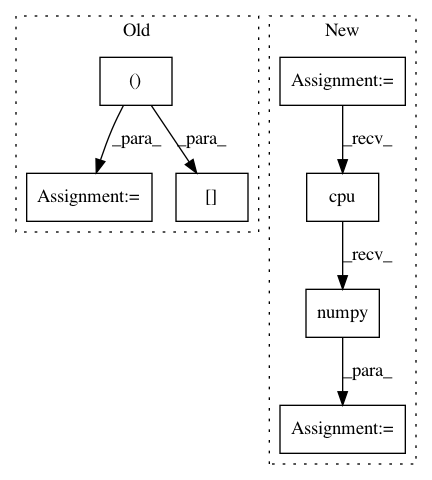

22e98420bbd9c5a082c894d2df02ae0dbd41846d,torch_geometric/nn/models/autoencoder.py,GAE,eval,#GAE#Any#Any#Any#,79
Before Change
neg_y = adj.new_zeros(neg_edge_index.size(1))
adj = torch.sigmoid(adj.detach())
pos_pred = adj[edge_index[0], edge_index[1]]
neg_pred = adj[neg_edge_index[0], neg_edge_index[1]]
y = torch.cat([pos_y, neg_y], dim=0).cpu()
pred = torch.cat([pos_pred, neg_pred], dim=0).cpu()
roc_score = roc_auc_score(y, pred)
ap_score = average_precision_score(y, pred)
return roc_score, ap_score
After Change
neg_y = z.new_zeros(neg_edge_index.size(1))
y = torch.cat([pos_y, neg_y], dim=0)
pos_pred = self.decode_for_indices(z, pos_edge_index, sigmoid=True)
neg_pred = self.decode_for_indices(z, neg_edge_index, sigmoid=True)
pred = torch.cat([pos_pred, neg_pred], dim=0)
y, pred = y.detach().cpu().numpy(), pred.detach().cpu().numpy()
return roc_auc_score(y, pred), average_precision_score(y, pred)
In pattern: SUPERPATTERN
Frequency: 3
Non-data size: 7
Instances
Project Name: rusty1s/pytorch_geometric
Commit Name: 22e98420bbd9c5a082c894d2df02ae0dbd41846d
Time: 2019-03-20
Author: matthias.fey@tu-dortmund.de
File Name: torch_geometric/nn/models/autoencoder.py
Class Name: GAE
Method Name: eval
Project Name: rusty1s/pytorch_geometric
Commit Name: 075a7a98d0dd84aeee8eca0e199697d0f4729f3c
Time: 2019-11-22
Author: klicpera@in.tum.de
File Name: torch_geometric/transforms/gdc.py
Class Name: GDC
Method Name: _expm
Project Name: havakv/pycox
Commit Name: 190d9b204a1a4798f0723c8d8d37ac5ac950909e
Time: 2019-05-08
Author: haavard.kvamme@gmail..com
File Name: pycox/models/deephit.py
Class Name: DeepHitSingle
Method Name: predict_survival_function